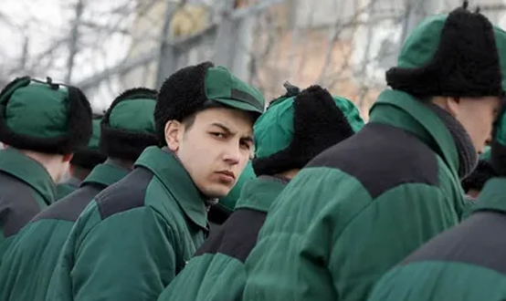

Общая характеристика преступлений против мира и безопасности человечества
Глава 34 УК «Преступления против мира и безопасности человечества» объединяет статьи 353—361. В этих статьях содержатся составы преступлений, имеющих международно-правовой характер и запрещенных международными правовыми актами — Конвенцией 1948 г. о предупреждении преступления геноцида и наказании за него, Декларацией Генеральной Ассамблеи ООН 1961 г. о запрещении применения ядерного оружия для целей войны, Конвенцией 1973 г. о предотвращении преступлений против лиц, пользующихся международной защитой, и наказаний за них и др.
Родовой и видовой объекты данной категории преступлений идентичны — интересы мира и безопасности человечества. Непосредственный объект — основы мирного сосуществования государств и народов мира.
Виды преступлений против мира и безопасности человечества
По объекту все преступления данной главы можно разделить на следующие группы:
1) преступления, посягающие на мир:
- ст. 353 — планирование, подготовка, развязывание или ведение агрессивной войны;
- ст. 354 — публичные призывы к развязыванию агрессивной войны;
- ст. 355 — разработка, производство, накопление, приобретение или сбыт оружия массового поражения;
- ст. 356 — применение запрещенных средств и методов войны;
2) преступления против человечности:
- ст. 357 — геноцид (действия, направленные на полное или частичное уничтожение национальной, этнической, расовой или религиозной группы как таковой путем убийства членов этой группы, причинения тяжкого вреда их здоровью, насильственного воспрепятствования деторождению, принудительной передачи детей, насильственного переселения либо иного создания жизненных условий, рассчитанных на физическое уничтожение членов этой группы);
- ст. 358 — экоцид (массовое уничтожение растительного или животного мира, отравление атмосферы или водных ресурсов, а также совершение иных действий, способных вызвать экологическую катастрофу);
- ст. 354.1. — реабилитация нацизма (одобрение преступлений, совершенных военными преступниками во Второй мировой войне, распространение заведомо ложных сведений о деятельности СССР в годы Второй мировой войны, о ветеранах Великой Отечественной войны, совершенные публично);
3) деяния, посягающие на принципы правового регулирования вооруженных конфликтов:
- ст. 359 — наемничество (вербовка, обучение, финансирование или иное материальное обеспечение наемника, а равно его использование в вооруженном конфликте или военных действиях, участие наемника в вооруженном конфликте или военных действиях);
- ст. 356.1. — мародерство (совершенные с корыстной целью в период военного положения, в военное время либо в условиях вооруженного конфликта или ведения боевых действий и не связанные с вынужденной необходимостью противоправные безвозмездное изъятие и (или) обращение в пользу виновного или других лиц чужого имущества, в том числе имущества гражданских лиц);
4) деяния, нацеленные на дестабилизацию международных отношений:
- ст. 360 — посягательство на лица или учреждения, пользующиеся международной защитой;
- ст. 361 — акт международного терроризма (совершение вне пределов территории РФ взрыва, поджога или иных действий, подвергающих опасности жизнь, здоровье, свободу или неприкосновенность граждан РФ в целях нарушения мирного сосуществования государств и народов либо направленных против интересов РФ).
Объективная сторона преступлений против мира и безопасности человечества — активные общественно опасные деяния в форме действий.
Субъект преступления в большинстве составов данной категории преступлений — физическое лицо, вменяемое, достигшее 16 лет. Субъектом планирования, подготовки, развязывания или ведения агрессивной войны может быть только должностное лицо, занимающее государственную должность РФ или субъекта РФ.
Субъективная сторона данной категории преступлений выражена в прямом умысле (неосторожность не является основанием для уголовной ответственности). В ст. 357 и 360 УК в качестве обязательного признака названа цель — полное или частичное уничтожение национальной, этнической, расовой или религиозной группы; провокация войны или осложнение международных отношений.
Данная категория преступлений имеет повышенный характер общественной опасности: за многие из них установлено наказание в виде лишения свободы на срок свыше 10 лет, геноцид и акт международного терроризма предполагают возможность пожизненного лишения свободы или смертной казни.